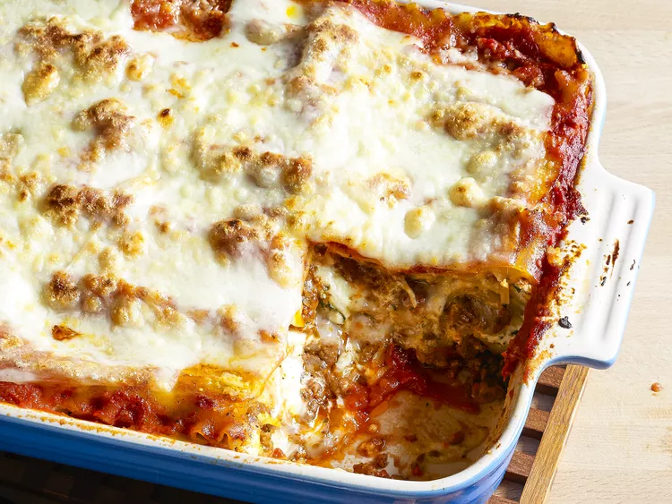

This lasagna recipe takes a little work, but it is so satisfying and filling that it's worth it!
The Allrecipes community adores this lasagna recipe because it's incredibly customizable, so you can easily alter the ingredient list to suit your needs. If you want to stay true to the original recipe, though, these are the ingredients you'll need to add to your grocery list:
Here's a very brief overview of what you can expect when you make homemade lasagna:
Wondering what goes with lasagna? We've got you covered. Check out our collection of 12 Easy Side Dishes for Lasagna for delicious serving inspiration. These are a few of the recipes you'll find: